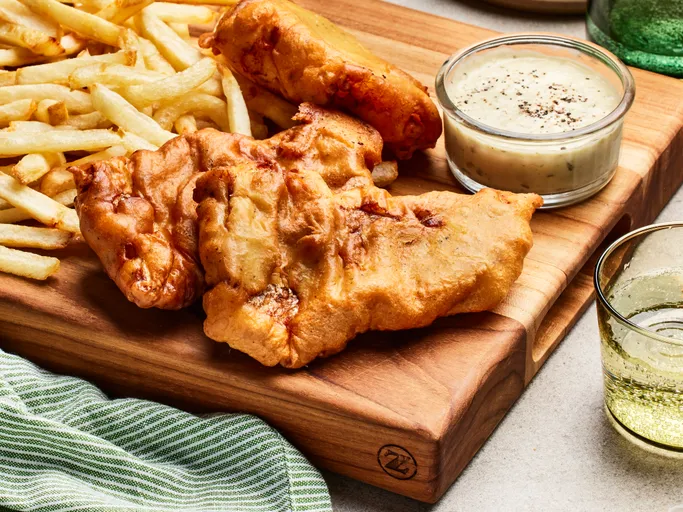

Homepage
Fish and Chips Recipe

Ingredients
- 4 large potatoes, peeled and cut into strips
- 1 cup all-purpose flour
- 1 teaspoon baking powder
- 1 teaspoon salt
- 1 teaspoon ground black pepper
- 1 cup milk
- 1 large egg
- 1 quart vegetable oil for frying
- 1 ½ pounds cod fillets
Steps
- Step 1:
Gather all ingredients.
- Step 2:
Place sliced potatoes in a medium bowl and cover with cold water.
- Step 3:
Mix flour, baking powder, salt, and pepper together in a separate medium bowl.
- Step 4:
Add milk and egg; stir until batter is smooth. Let stand for 20 minutes.
- Step 5:
Meanwhile, heat oil in a large pot or electric skillet to 350 degrees F (175 degrees C).
- Step 6:
Drain and pat dry potatoes. Fry in hot oil until tender, about 5 minutes; drain on paper towels.
- Step 7:
Dredge cod in batter, one piece at a time, and place in hot oil.
- Step 8:
Fry fish in batches until golden brown on all sides; drain on paper towels. Monitor oil temperature, increasing the heat as needed to maintain 350 degrees F (175 degrees C).
- Step 9:
Fry potatoes again in hot oil until crisp, 1 to 2 minutes; drain on paper towels.
- Step 10:
Serve and enjoy!